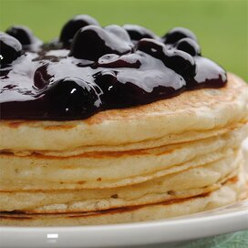

Pan cake recipe
Healthy Pan cakes!
- prep: 15 mins
- makes 10-12
- cook : 30 mins
Method
- Sift the flours into a bowl or wide jug and tip any bits in the sieve back into the bowl. Add the egg yolks and a splash of milk then stir to a thick paste. Add the remaining milk a little at a time so you don’t make lumps in the batter.
- Whisk the egg whites until they stand up in stiff peaks, then fold them carefully into the batter – try not to squash out all the air.
- Heat a non-stick pan over a medium heat and pour in enough batter to make a pancake about 10 cm across. Cook for just under a minute until bubbles begin to pop on the surface and the edges are looking a little dry. Carefully turn the pancake over. If it is a bit wet on top, it may squirt out a little batter as you do so. In that case, leave it on the other side a little longer. Keep warm while you make the remaining pancakes. Serve with your favourite healthy toppings.
Ingredients
50g self-raising flour
50g wholemeal or wholegrain flour
2 small eggs, separated
150ml skimmed milk
berries and low-fat yogurt or fromage frais to serve
